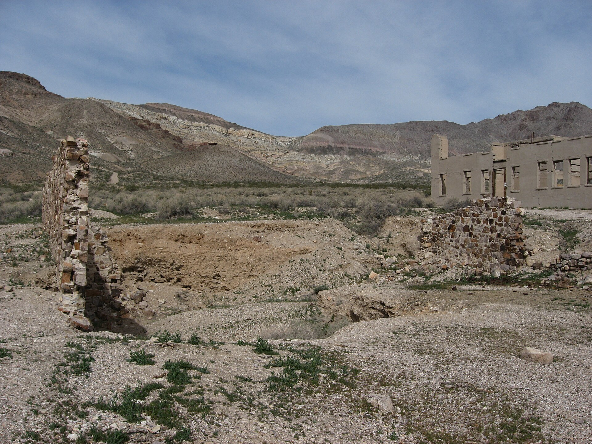

Free • BLM

Nevada • ~2 hrs from Vegas
Beatty BLM & Rhyolite ghost town
Your first legal free night and a great stretch break. The land around Beatty is BLM, so dispersed vehicle camping is allowed by default. Detour to the Rhyolite Historic Area (BLM, 4 mi west of Beatty): free, sunrise-to-sunset day use, mining ruins and the eerie Goldwell open-air sculptures. Note Rhyolite itself is day-use only, so camp on BLM land outside it.
CostFree
Stay limit14 days / 28 (BLM), then move ~25 mi
NoteRhyolite & Goldwell are day-use; sleep on surrounding BLM